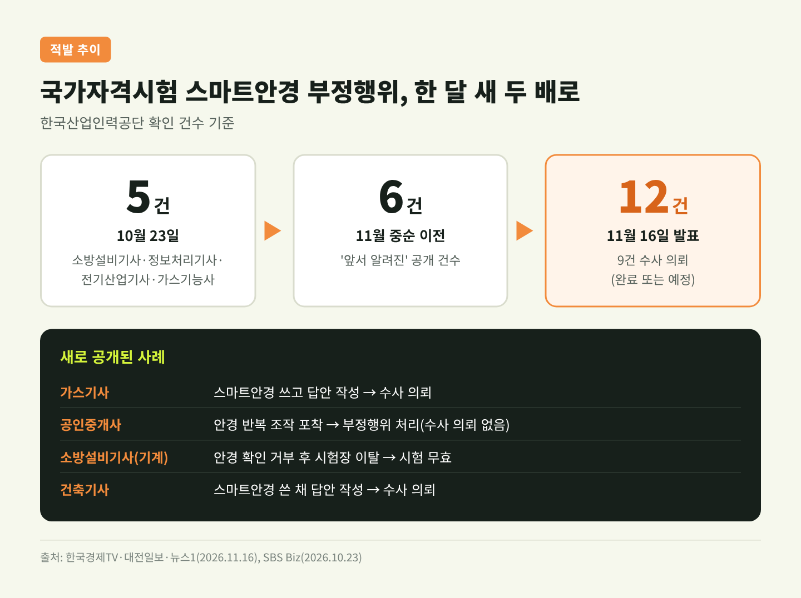
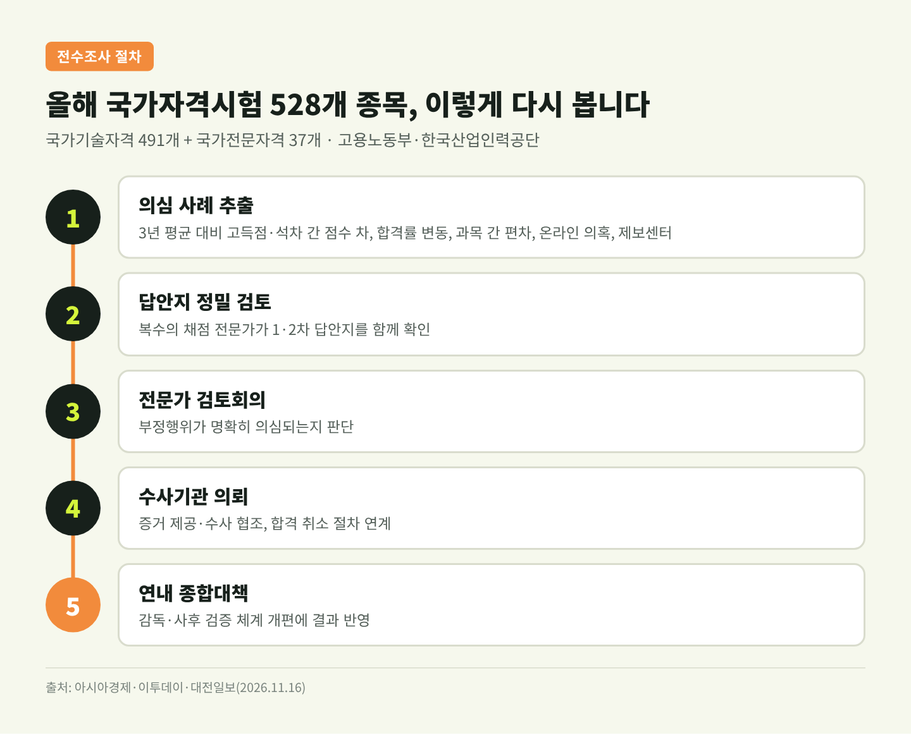
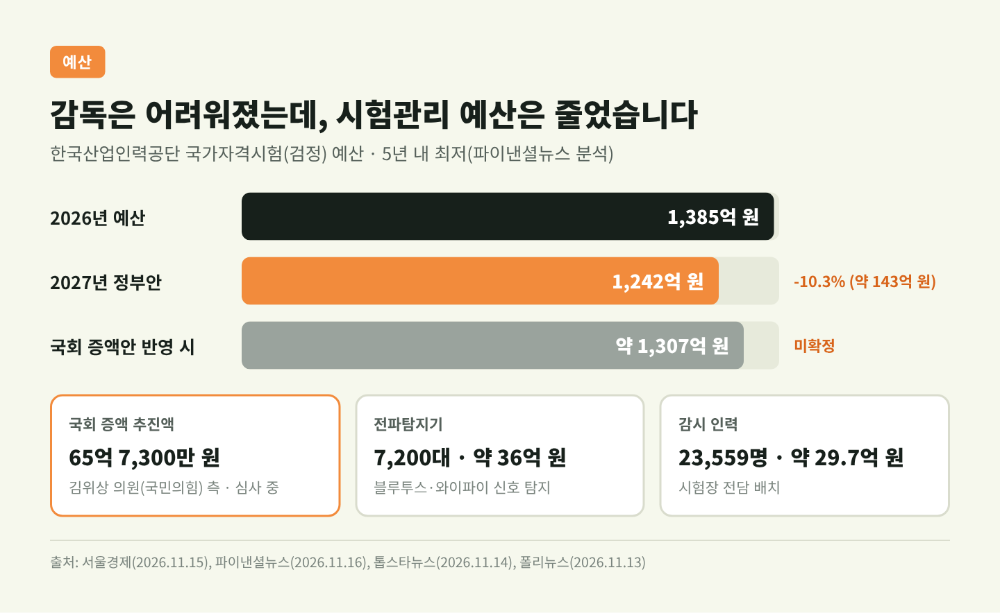
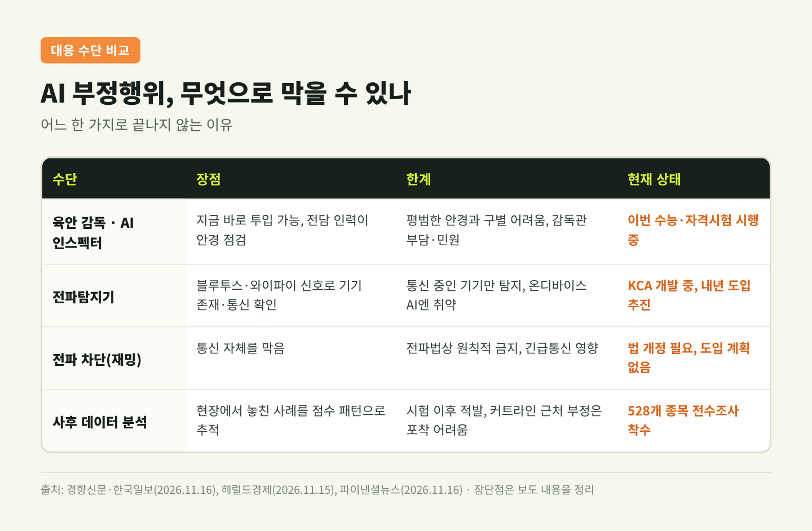
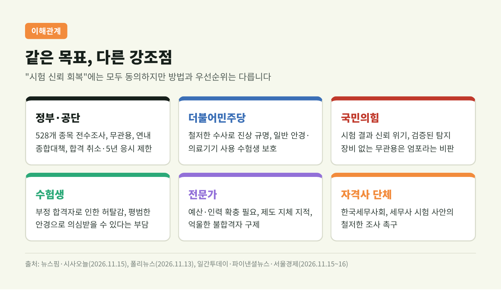

국가자격시험 AI 부정행위 12건 적발, 전수조사와 감독체계 과제

이번 글에서는 국가자격시험 AI 부정행위 적발이 12건으로 늘어난 사안을 정리해 보겠습니다. 수능 이야기보다는 '시험을 관리하는 체계'가 어디서 흔들렸는지에 초점을 맞췄습니다.
세 줄 요약
- 한국산업인력공단은 올해 국가자격시험에서 스마트안경 등 AI 기기 부정행위 12건을 적발했다고 11월 16일 밝혔습니다. 앞서 알려진 6건의 두 배이며, 9건은 수사 의뢰가 됐거나 예정입니다.
- 계기는 제63회 세무사 시험 수석 합격자의 부정행위 시인입니다. 정부는 올해 치른 528개 종목 전체를 전수조사합니다.
- 반면 내년 공단의 자격시험 예산 정부안은 1,242억 원으로 10.3% 줄었습니다. 국회에서는 전파탐지기·감시 인력 65억7,300만 원 증액안이 논의되고 있습니다.
■ 무슨 일이 있었나 — 6건이 12건이 되기까지
시작은 한 달 전입니다. 10월 23일 공단이 확인한 스마트안경 부정행위는 5건이었습니다. 소방설비기사, 정보처리기사, 전기산업기사, 가스기능사 시험이었습니다.
그 숫자가 11월 16일 12건으로 늘었습니다. 공단 보도참고자료에 따르면 새로 드러난 사례는 이렇습니다.
- 가스기사(10월): 스마트안경을 쓰고 답안을 쓰다 적발돼 경찰에 수사 의뢰
- 공인중개사(10월, 인천): 안경을 반복해 만지는 모습이 포착됐지만, 답안 작성 장면은 확인되지 않아 부정행위 처리에 그침
- 소방설비기사 기계 분야(11월, 부산): 감독관의 안경 확인 요청을 거부하고 시험장을 떠남. 시험은 무효 처리
- 건축기사(울산): 스마트안경을 쓴 채 답안을 작성하다 발각돼 수사 의뢰
12건 가운데 9건은 수사 의뢰를 했거나 앞두고 있습니다. 한 사례는 증거가 부족해 수사로 이어지지 못했습니다. 현장에서 잡아내는 일이 얼마나 까다로운지 보여주는 대목입니다.

■ 발단이 된 세무사 시험 수석 합격자 사건
이번 확산의 출발점은 제63회 세무사 시험입니다. 수석 합격자 A씨는 11월 15일 무렵 부정행위를 스스로 인정했습니다. 4월 1차, 7월 2차 시험에서 초소형 카메라로 문제를 찍어 생성형 AI에 보내고, 스마트폰으로 답을 확인했다는 설명입니다.
의혹의 계기는 A씨 본인이 공개한 점수였습니다. 1차 160문제 중 한 문제만 틀렸고, 세 과목이 만점이었습니다. 온라인에서 "이례적"이라는 의문이 이어졌습니다.
뼈아픈 것은 감독 과정입니다. A씨는 1차 때 둘째 줄 중앙, 2차 때 첫째 줄 중앙에 앉았습니다. 그런데도 시험 중에는 아무도 알아채지 못했습니다. 공단은 13일 자체 조사에서 '특이사항 없음'이라고 밝혔다가, 이틀 뒤 사과해야 했습니다. 시험실 감독 인원은 SBS가 '2명', 경향신문이 '4명'으로 보도해 차이가 있습니다. 1·2차를 합친 숫자인지는 확인되지 않았습니다.
A씨는 공인회계사(CPA) 1차에서도 같은 방법을 썼다고 진술했습니다. 다만 금융감독원은 "CPA 1차 합격 사실이 없다"고 밝혔습니다.
현재 서울경찰청 광역수사단이 수사 중입니다. 공단은 업무방해 혐의로 고소했고, 기획재정부·국세청과 협의해 합격 취소 절차를 서두르겠다고 했습니다.
■ 왜 중요한가 — 자격증은 '믿음'으로 작동합니다
자격증은 종이 한 장이 아닙니다. "이 사람은 이 일을 맡겨도 된다"는 국가의 보증입니다. 세무사는 남의 세금을, 소방설비기사는 건물의 안전을, 건축기사는 구조물을 다룹니다.
부정 합격자 한 명은 그 보증 전체를 의심받게 만듭니다. 한 수험생은 "누군가는 커트라인만 티 나지 않게 넘겨서 일하고 있을 것 같다"고 말했습니다. 적발된 사례보다 드러나지 않은 사례가 더 많을 수 있다는 불안입니다.
더 큰 문제는 '사후에야' 드러났다는 점입니다. 세무사 사건은 감독관이 아니라 온라인 의혹과 본인 시인으로 밝혀졌습니다. 현장 감독이 사실상 작동하지 않았다는 뜻입니다.
■ 정부의 대응 — 528개 종목 전수조사
청와대는 11월 15일 하준경 정책실장 주재로 긴급대책회의를 열었습니다. 같은 날 권창준 고용노동부 차관도 비상대책회의를 주재했습니다. 하 실장은 "어떠한 부정행위도 용납돼서는 안 된다"고 강조했습니다.
조사 대상은 올해 시행된 국가자격시험 528개 종목입니다. 국가기술자격 491개, 국가전문자격 37개입니다. 세무사 사건의 특징을 본떠 다음 경우를 먼저 추려냅니다.
- 최근 3년 평균보다 현저히 높은 점수, 석차 간 점수 차가 큰 경우
- 과거보다 합격자 비율이 크게 변한 경우
- 한 사람의 과목 간 점수 편차가 큰 경우
- 온라인 커뮤니티에서 의혹이 제기된 경우
- 공단에 새로 여는 부정행위 제보센터에 들어온 사례
추려낸 답안지는 여러 채점 전문가가 1·2차를 함께 다시 봅니다. 검토회의에서 부정이 명확하다고 판단하면 수사기관에 넘깁니다. 결과는 연내 '부정행위 방지 종합대책'에 담깁니다.
참고로 일부 2차 요약 자료에는 "수석 합격자와 1년 내 동시 합격자부터 점검한다"는 표현이 돌았습니다. 정부 발표와 주요 보도에서는 이 기준을 확인할 수 없었습니다. 공식 기준은 위의 다섯 가지입니다.

■ 쟁점 1 — 예산은 줄고, 기기는 작아졌습니다
공단의 자격시험 관리 예산은 올해 1,385억4,400만 원입니다. 내년 정부안은 1,242억3,600만 원입니다. 약 143억 원, 10.3% 줄었습니다. 파이낸셜뉴스 분석으로는 2022년 이후 5년 내 가장 적은 규모입니다.
예전엔 휴대전화만 걷으면 됐습니다. 지금은 평범한 안경처럼 보이는 기기가 문제를 읽고 답을 찾습니다. 요구되는 감독의 수준은 올라갔는데, 예산은 반대 방향으로 움직인 셈입니다.
현장 사정도 녹록지 않습니다. 공단 자체 시험장이 소화하는 인원은 전체의 51% 수준이고, 나머지는 학교 등 외부 시설을 빌립니다. 감독관 수당은 민간 시험보다 낮다는 지적이 있습니다. 응시 수수료는 2014년 이후 사실상 동결 상태입니다. 감독관들은 "놓치면 책임, 꼼꼼히 보면 민원"이라는 부담을 호소합니다.
국회에서는 김위상 국민의힘 의원 측이 65억7,300만 원 증액을 추진하고 있습니다. 전파탐지기 7,200대에 약 36억 원, 감시 인력 23,559명에 약 29.7억 원입니다. 반영되면 예산은 약 1,307억 원 수준이 됩니다. 아직 국회 심사를 거쳐야 하는 안이며 확정된 것은 아닙니다.
이영민 숙명여대 행정학과 교수는 공단 인력이 2,000명이 안 된다는 점을 짚었습니다. 근로복지공단(약 1만 명)과 비교하면 규모 자체가 작다는 것입니다. 예산과 인력을 늘리지 않으면 기관장 교체만으로는 해결되지 않는다는 진단입니다.

■ 쟁점 2 — 탐지 기술에도 한계가 있습니다
한국방송통신전파진흥원(KCA)은 10월 이동형 탐지 장비 개발에 들어갔고, 11월 2일 입찰공고를 냈습니다. 블루투스·와이파이 신호를 잡아 스마트안경의 존재와 통신 여부를 확인하는 방식입니다. 교육부와 노동부는 내년부터 수능과 국가자격시험에 도입하는 방안을 추진합니다.
하지만 만능은 아닙니다. 탐지기는 통신 중인 기기만 잡을 수 있습니다. 기기 안에서 AI가 직접 계산하는 '온디바이스 AI'가 발전하면 신호 자체가 없을 수 있습니다.
전파를 아예 막는 재밍도 거론됩니다. 그러나 전파법은 공공안전 목적이 아니면 전파 차단을 원칙적으로 금지합니다. 법을 바꿔야 하고 긴급 통신에도 영향을 줄 수 있습니다. 중국·인도 일부 시험에서는 쓰고 있지만, 국내 도입은 아직 어렵다는 평가입니다.
그래서 11월 19일 수능은 '사람'에 기댑니다. 최교진 교육부 장관은 모든 시험장에 스마트안경 전담 인력을 최소 1명 배치했다고 밝혔습니다. 이번 수능에는 통신 차단도, 전용 탐지 장비도 없습니다. 대부분 육안 점검이며, 전파탐지기는 내년 수능 도입을 검토하는 단계입니다.

■ 쟁점 3 — 처벌과 합격 취소의 근거
처벌 수위는 수사와 재판에서 정해집니다. 거론되는 혐의는 두 가지입니다.
- 업무방해죄: 5년 이하 징역 또는 1,500만 원 이하 벌금
- 위계에 의한 공무집행방해죄: 5년 이하 징역 또는 1,000만 원 이하 벌금
선례도 있습니다. 2025년 4월 천장크레인운전기능사 필기시험에서 휴대전화로 챗GPT에 답을 묻다 적발된 20대는 국가기술자격법 위반으로 벌금 300만 원을 선고받았습니다. 2024년 도선수습생 필기시험에서 증강현실 스마트안경을 쓴 응시자는 징역 1년, 집행유예 3년을 받았습니다.
자격 측면에서는 합격 취소와 응시 제한이 뒤따릅니다. 정부는 세무사 수석 합격자의 합격을 취소하고 5년간 응시를 막을 방침입니다. 공인회계사법도 제5조의2에서 부정행위자의 합격 취소와 5년 응시 제한을 둡니다. 수능은 현재 다음 해 응시 자격만 박탈하는데, 교육부는 이를 3년으로 늘리는 법 개정을 추진 중입니다.
■ 이해관계 — 같은 목표, 다른 강조점
여야는 "시험 신뢰가 흔들렸다"는 진단에는 뜻을 같이합니다. 강조점은 다릅니다.
더불어민주당 안태훈 상근부대변인은 "경찰은 철저한 수사로 진상을 밝혀야 한다"고 했습니다. 이주희 원내대변인은 전수조사와 합격 취소를 신속히 하되, 일반 안경이나 의료기기를 쓰는 수험생이 불이익을 받아서는 안 된다고 했습니다. 불안을 키우는 정치 공세는 멈추라는 주문도 덧붙였습니다.
국민의힘 장동혁 대표는 "이 정도면 국가자격시험 결과 자체를 믿기 어려운 상황"이라고 했습니다. 최보윤 수석대변인은 "잡을 수단도, 검증된 장비도 없는 '무관용'은 엄포일 뿐"이라며 탐지 기술 검증을 요구했습니다.
한국세무사회도 철저한 조사를 촉구했습니다.
전문가 시각도 갈래가 있습니다. 구정우 성균관대 교수는 AI 안경이 이미 대중화됐는데 이제야 전수조사를 한다고 지적했습니다. 처벌만큼 억울하게 떨어진 수험생 구제가 중요하다는 점도 짚었습니다. 김윤태 중앙대 교수는 기술 속도를 제도가 따라가지 못하는 '문화지체'를 원인으로 꼽았습니다.
수험생에게는 두 가지 걱정이 겹칩니다. 부정 합격자 탓에 내 자리를 잃었을지 모른다는 허탈감, 그리고 평범한 안경을 썼다가 의심받을 수 있다는 부담입니다. 국회 청원에서도 감독 강화와 함께 일반 안경·장애인·의료기기 사용자 예외, 개인정보 보호가 함께 요구됐습니다.

■ 앞으로 볼 것 — 세 가지 시점
첫째, 전수조사 결과입니다. 528개 종목에서 추가 의심 사례가 얼마나 나오는지가 관건입니다. 수사로 넘어가는 사례가 늘면 합격 취소와 구제 문제가 함께 떠오를 것입니다.
둘째, 국회 예산 심사입니다. 65억7,300만 원 증액안이 최종 예산에 들어갈지 지켜봐야 합니다.
셋째, 연내 종합대책입니다. 탐지 장비, 감독 인력, 사후 검증, 처벌 강화가 어떤 조합으로 묶일지가 핵심입니다. 온디바이스 AI처럼 신호가 없는 기기까지 염두에 둔 설계인지도 살펴볼 대목입니다.
정리하면 이렇습니다. 기기가 작아지고 똑똑해지는 속도를 맨눈 감독과 줄어든 예산이 따라가지 못했습니다. 탐지기 한 대로 끝날 문제도, 처벌 강화만으로 끝날 문제도 아닙니다.
"시험의 공정성은 감독관 한 사람이 아니라 체계 전체가 지키는 것"이라는 점이 이번에 드러났습니다.
신뢰를 되찾을 수 있겠냐고 물으신다면, 이번 전수조사와 종합대책이 얼마나 정직하게 결과를 내놓느냐에 달려 있다고 답하겠습니다.
출처
- 대전일보, "AI 부정행위 적발만 12건… 국가자격시험 528개 전수조사" (2026-11-16) https://www.daejonilbo.com/news/articleView.html?idxno=2313998
- 아시아경제, "세무사 이어 국가자격 528개 종목 전수조사…AI 부정 의심 답안지 검증 후 수사 의뢰" (2026-11-16) https://view.asiae.co.kr/article/2026111615044427411
- 한국경제TV, "'믿을 시험이 없다'…'AI 안경이죠?' 감독관 묻자 줄행랑 친 수험자" (2026-11-16) https://www.wowtv.co.kr/NewsCenter/News/Read?articleId=A202611160146
- 뉴스1, "국가자격 'AI안경 부정' 12건 적발(종합)" (2026-11-16) https://www.news1.kr/economy/employment-labor/6355901
- 이투데이, "노동부, 국가자격시험 전 종목 'AI 부정행위' 전수조사" (2026-11-16) https://www.etoday.co.kr/news/view/2648745
- SBS, "세무사 수석합격자, AI 부정행위 시인…경찰, 서울청 광수단 배당" (2026-11-15) https://news.sbs.co.kr/news/endPage.do?news_id=N1008846418
- 파이낸셜뉴스(뉴시스), "국가시험 수석까지 만든 'AI 커닝'" (2026-11-16) https://www.fnnews.com/news/202611160501404771
- 헤럴드경제, "세무사 'AI 부정행위'에 인력공단 사과…합격 취소·전수조사 추진" (2026-11-15) https://biz.heraldcorp.com/article/10937595
- 인사이트, "정부 'AI 부정 세무사 수석 합격 취소'" (2026-11-16) https://www.insight.co.kr/news/582178
- 포인트경제, "금감원 'CPA 1차 합격 사실 없어'" (2026-11-16) https://www.pointe.co.kr/news/articleView.html?idxno=87804
- 서울경제, "'국가시험 부정행위' 고도화 되는데…내년 검정예산 140억↓" (2026-11-15) https://m.sedaily.com/article/20114518
- 파이낸셜뉴스, "'AI커닝' 비상인데… 국가시험 예산은 줄었다" (2026-11-16) https://www.fnnews.com/news/202611161845514909
- 톱스타뉴스, "AI 안경 부정행위 막아달라 국회 청원…대응 예산 65억원 추진" (2026-11-14) https://www.topstarnews.net/news/articleView.html?idxno=16276559
- 폴리뉴스, "수능 앞두고 스마트안경 활용 부정행위 우려 확산" (2026-11-13) https://www.polinews.co.kr/news/articleView.html?idxno=748438
- 경향신문, "기술 속도 못 따라가는 '맨눈 감시'…전파탐지기는 빨라야 내년 도입" (2026-11-16) https://www.khan.co.kr/article/202611161420001/
- 한국일보, "교육부 장관 '수능 부정행위 땐 3년 자격 박탈 추진'" (2026-11-16) https://www.hankookilbo.com/news/article/A2026111610050000719
- 머니투데이, "챗GPT로 시험 적발, 벌금 300만원…세무사 수석의 처벌 수위는" (2026-11-16) https://www.mt.co.kr/index.php/society/2026/11/16/2026111610165919771
- 뉴스핌, "세무사 AI 부정행위 자백에 여야 '국가시험 신뢰 흔들려'" (2026-11-15) https://www.newspim.com/news/view/20261115000067
- 시사오늘, "'AI 부정' 파문…靑 '국가시험 전수조사'" (2026-11-15) https://www.sisaon.co.kr/news/articleView.html?idxno=206085
- 일간투데이, "민주당, AI 부정행위 대응책 발표" (2026-11-16) https://www.dtoday.co.kr/news/articleView.html?idxno=803928
- SBS Biz, "시험장서 'AI 안경' 부정행위 5건…47만명 응시 앞두고 꺼낸 카드는?" (2026-10-23) https://biz.sbs.co.kr/amp/article/20000341848